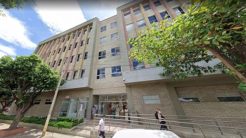

La idea de la creación del SENA, la entidad más querida por los colombianos de acuerdo a diversas encuestas, fue del abogado cartaganero Rodolfo Martínez Tono, quien la plasmó en su tesis de grado profesional, «La Formación Profesional en el Marco de una Política de Empleo». En sus inicios, la entidad se llamó Instituto de Capacitación Obrera, y tuvo como sede una pequeña oficina de la Universidad Nacional. Para captar los primeros aprendices, Martínez Tono se desplazaba a la entrada de las fábricas y se paraba sobre un viejo bus y megáfono en mano invitaba a los trabajadores a formarse. El proyecto vio la luz mediante el Decreto-Ley 118, del 21 de junio de 1957, durante el gobierno de la Junta Militar, tras la renuncia de Gustavo Rojas Pinilla6. Fue impulsado por el propio Martínez Tono con el apoyo del entonces ministro de Trabajo, Raimundo Emiliani Román. El nombre de la institución se lo puso su fundador, en homenaje al río principal de París (Francia), lugar al que solía visitar, 789 e inspirado en el SENAI de Brasil. Sus funciones eran brindar formación profesional a los trabajadores, jóvenes y adultos de la industria, el comercio, la agricultura, la minería y la ganadería.10 La naciente entidad no solo formaba técnicos, sino también empresarios y promovía las pequeñas y medianas empresas
